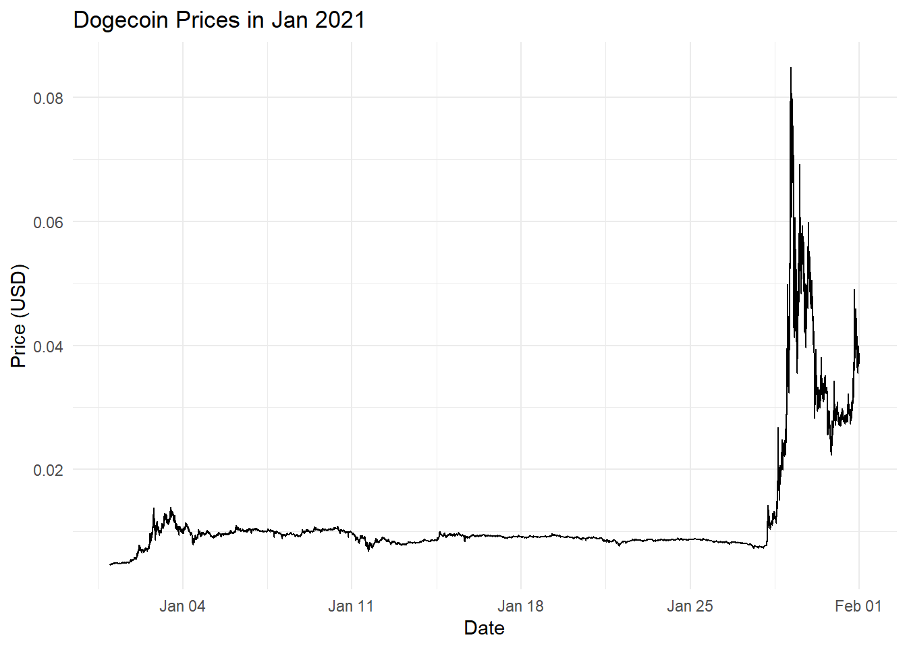
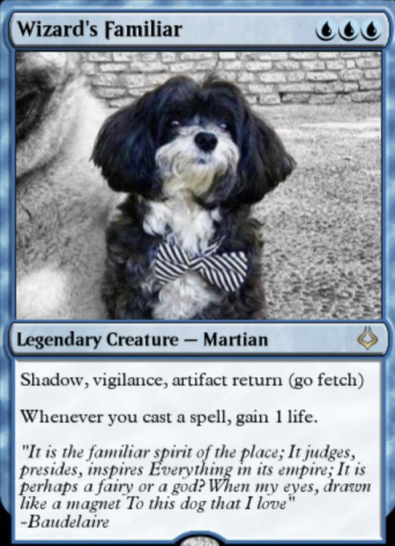
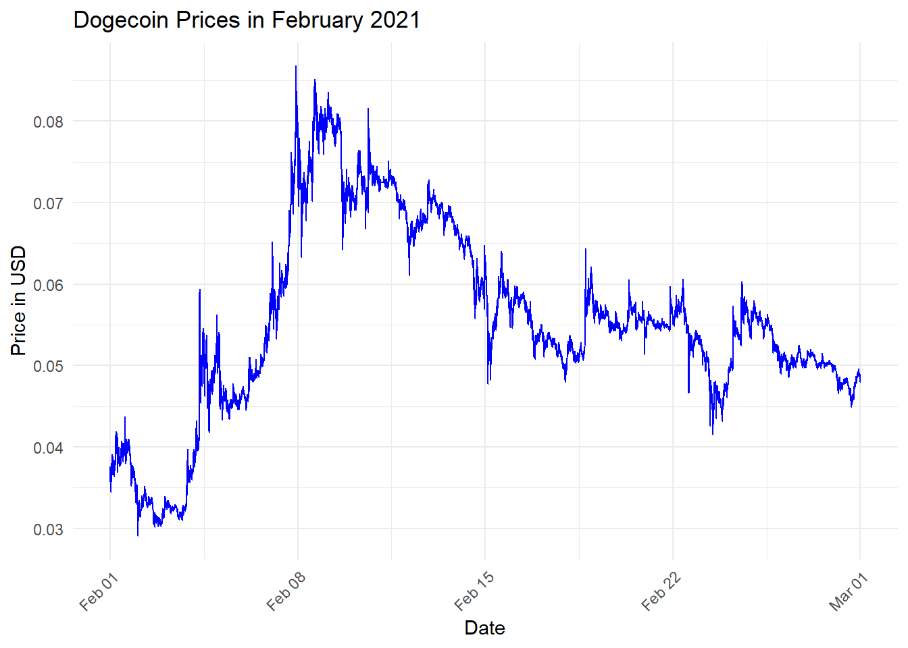
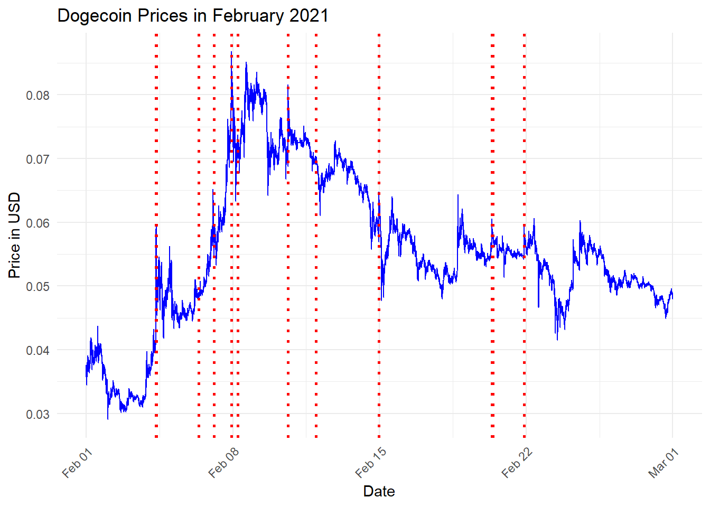
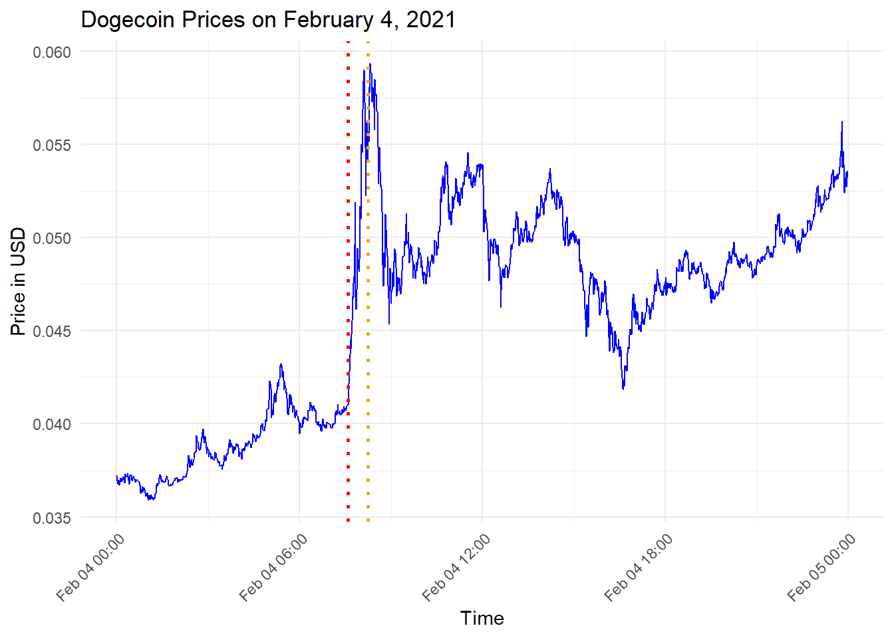
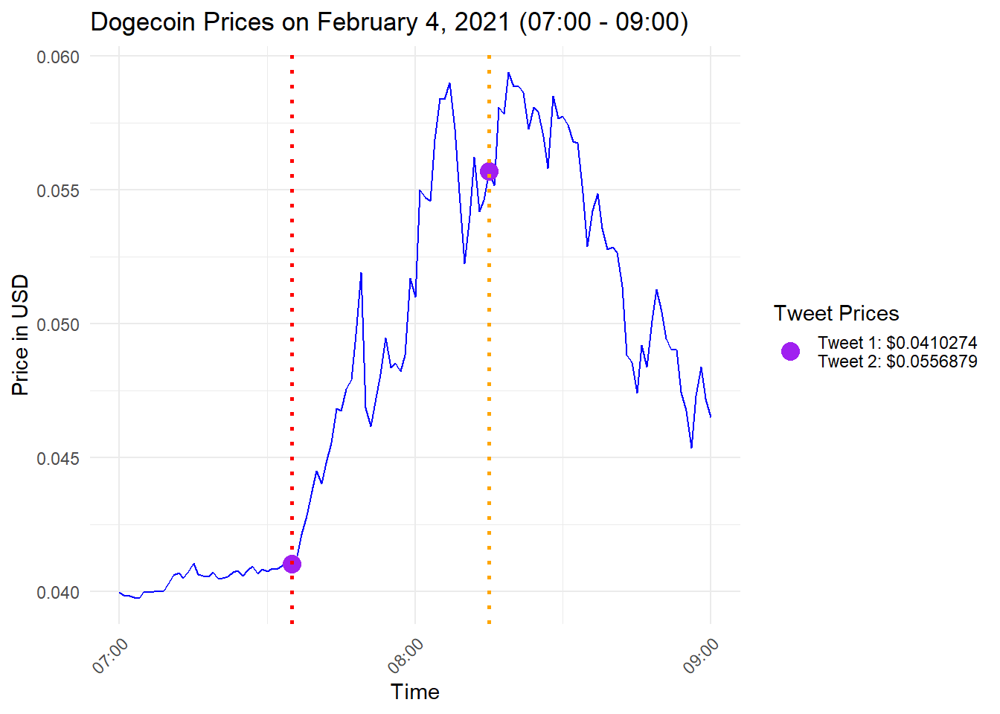

Doge Coin? Elon Musk? What is the big Fuss!
Analysis of January 2021
Before January 2021, Dogecoin was relatively stable with little fluctuation in its price. However, seemingly out of nowhere, it spiked in price as seen in the plot below.
Why did this sudden change occur? Let’s dive into the data for January and uncover the story behind these movements.
So what did Elon Musk do in January!
So, what exactly happened between January 27 and 29? And why is Elon Musk the main subject here? Well, it’s obvious, isn’t it? He must have influenced the market… right?
Let’s dive into all his tweets from January. We’ll specifically look for any tweets related to Dogecoin. Could these tweets be the catalyst for the sudden spike?
Stay tuned as we unravel the tweets and their potential impact on Dogecoin’s value.
| Datetime | Tweet.Id | Text |
|---|
Just look at that!. Oh? Nothing is appearing? Well if nothing is appearing, thats not your fault or any one infact, Elon Musk actually didn’t do anything during January! Thats right! I’ve combed through his tweets, filtered them to January and filtered through for anything that has the word “Doge” and turns out he didn’t mention it at all! So the spike in January wasn’t due to him. But he did mention his dog!
| Datetime | Text |
|---|---|
| 2021-01-26 11:32:00 | Bought a hand knit wool Marvin the Martian helm for my dog |
| 2021-01-30 20:50:00 | @we5dogg @teslaownersSV No escaping that for me |

The dog in question.
February Frenzy: A Closer Look
With January behind us, our sights are now set on February—a time when Elon Musk’s tweets about Dogecoin were more than just whispers in the digital wind.
Here, we’ll narrow down our scope and zoom into those specific days in February, reading between the fine lines and identify if there is truly a correlation or NOT!

Wow! That’s alot of movement out of no where! I wonder what Elon Musk was saying.
| Datetime | Text |
|---|---|
| 2021-02-04 07:35:00 | Doge |
| 2021-02-04 08:15:00 | Dogecoin is the people’s crypto |
| 2021-02-06 08:42:00 | @Grimezsz Dogecake |
| 2021-02-07 02:24:00 | @Dogecoinrich 🤣🤣 |
| 2021-02-07 02:36:00 | @Jbuttermost @Dogecoinrich 🤣🤣 |
| 2021-02-07 22:25:00 | 🎶 Who let the Doge out 🎶 |
| 2021-02-08 05:27:00 | \makecell[l]{@itsALLrisky Doge appears to be inflationary, but is not meaningfully so (fixed # of coins per unit time), whereas BTC is arguably deflationary to a fault.\\\\Transaction speed of Doge should ideally be a few orders of magnitude faster.} |
| 2021-02-10 15:08:00 | Bought some Dogecoin for lil X, so he can be a toddler hodler |
| 2021-02-11 23:27:00 | @gtera27 Doge is underestimated |
| 2021-02-14 23:25:00 | If major Dogecoin holders sell most of their coins, it will get my full support. Too much concentration is the only real issue imo. |
| 2021-02-14 23:33:00 | @RationalEtienne An acceptable percentage. Doge is much more concentrated. |
| 2021-02-20 08:42:00 | @dogecoin I just set up some little Doge mining rigs with my kids. It was fun. |
| 2021-02-20 10:06:00 | @PPathole @dogecoin Just some used Antminer L3+ rigs bought off eBay. Not really economic, but it was a fun family project. |
| 2021-02-21 21:27:00 | Dojo 4 Doge |
WOW! Isn’t that just quite a bit from him just on Doge…. And from the looks of it, his really hyping it up! But its pretty hard to visualize this on our own, so why not we plot his tweets onto the February price chart!

Looks like we are Onto something… maybe? From this large view, it really could mean 2 things
- Dogecoin is moving up and spiking whenever Elon tweets about it
- Elon Tweets as Dogecoin is moving up
Its difficult when we see it in this view, so lets Zoom in to a specific date… Lets say… February 4?

OKAY! We are getting somewhere, right? We can clearly see theres some movement due to the 2 tweets that are so close to each other yet the price is significantly different. Lets zoom in just 1 last time!

As you can see! During these 2 particular point in February 4, Elon Musk gave 2 tweets about Doge coin and seemingly it seemed to spike almost immediately! Of course there are some down points but that could also mean many people are selling their stock!
| Datetime | Text |
|---|---|
| 2021-02-04 07:35:00 | Doge |
| 2021-02-04 08:15:00 | Dogecoin is the people’s crypto |
The Tweets he made on the 4th of Feb.
The First Domino Falls: February 4th’s Tweet Heard Around the Crypto World
And there it was—the tweet that launched a thousand trades. February 4th marked a pivotal moment in the digital currency saga, when a mere 280 characters from Elon Musk rippled through the markets, sending Dogecoin’s prices on a meteoric surge. It was not just a spike; it was a declaration that in the new age of social-media-driven markets, the influence of a single individual can indeed eclipse traditional market forces.
While a granular, tweet-by-tweet analysis might yield a complex tapestry of correlation and causation, the events of February 4th speak volumes on their own. In a world where markets hang on every word of industry titans, this was a resounding testament to the power of influence.
We stand at the crossroads of market dynamics and social media impact—a juncture where a simple digital utterance can send shockwaves across the financial landscape. As we pull the curtain on this data story, we’re left with a lingering question more valuable than Dogecoin itself: In this new era of investment, where do we draw the line between economic strategy and social sway?
The saga continues, but for now, February 4th remains a stark reminder: in the cryptocurrency arena, sometimes the pen (or should we say tweet?) is mightier than the dollar.
Visualization of Dogecoin’s Price Movement in Response to Elon Musk’s Tweets